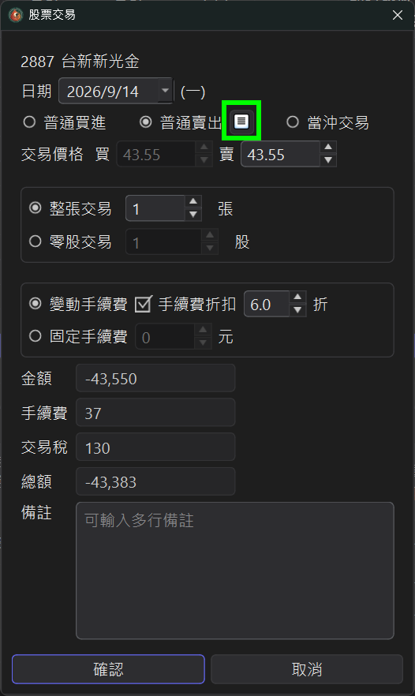
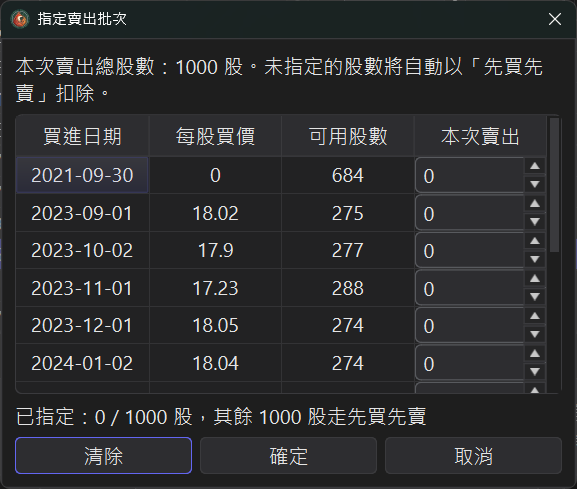
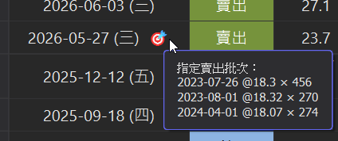

指定賣出批次 v3.5.0 新增
同一檔股票，你可能在不同時間、不同價格分批買進。
一般記帳軟體賣出時預設用先買先賣（FIFO）自動扣庫存。
「指定賣出批次」讓你手動指定這次要賣出的是哪些買進批次
—— 依買進日期 + 買進價格挑選，還能決定每個批次各賣幾股。
1、什麼時候會用到？
● 對齊券商實際成交：券商有時不是純先買先賣，指定批次可讓你的帳面損益與對帳單一致。
● 掌控已實現損益：想實現獲利或認列虧損時，自己選要賣高成本或低成本的批次。
● 稅務 / 報表規劃：精準控制每次賣出對應的成本，讓損益數字符合你的規劃。
2、開啟指定賣出批次視窗
新增一筆普通賣出時，點旁邊的小按鈕就會開啟「指定賣出批次」頁面。

3、挑要賣的批次、填股數
系統會列出賣出日之前仍有庫存的所有買進批次，欄位包含 買進日期、 每股買價、 可用股數。 在各批次的「本次賣出」欄填入這次要賣掉的股數即可。

● 沒有指定的股數會自動以先買先賣扣除，不必每檔都填滿。
● 底部即時顯示「已指定 X / 總股數，其餘 Y 股走先買先賣」，一眼看清楚剩下多少會走 FIFO。
● 連股票股利配來的零成本股數也能被指定賣出。
4、指定完後怎麼看
賣出的那一列會多出一個 🎯 標記， 滑鼠移上去就會看到這筆賣出實際用了哪些批次 （買進日期 @ 每股買價 × 股數）。

5、雲端 / 單機都會存檔
不論你用雲端模式或單機模式， 指定的批次都會完整存檔，程式重開後保留原本的指定，不會退回先買先賣。